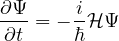
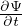

A Rigorous Proof of the Symmetry-Based
Molecular Orbital Method
#SoME4 Submission
August 2025
1 Preface
Symmetry methods are taught universally in undergraduate inorganic classrooms,
and have been for many years. Surprisingly, however, there are few resources
available which cover the subject in deeper depth from a mathematical perspective,
and of those, none are both accessible to undergraduates and detailed enough to
provide a complete understanding. Some advanced texts exist from a mathematical
or physics perspective, but the vast majority are heavily tailored towards advanced
application (in the case of phyics) or highly abstract generalization (in the case of
math), rendering them pretty much useless to nonexperts in those fields. A small
number of advanced chemistry texts cover the subject - namely, Robert Carter’s
Molecular Symmetry and Group Theory and F. Albert Cotton’s Chemical
Applications of Group Theory each go into some detail - but both either fall short of
a full-depth explanation (in the case of carter) or provide a significant amount of
rigor, but don’t elaborate enough about the representation theory before
jumping right into character theory, which in Cotton’s book left me particularly
unsatisfied. Additionally, neither do a very thorough job of motivating the method
physically, arguably the most important part of a grounded and satisfying
explanation.
I personally think a thorough explanation and demonstration of the representation
theory of molecules is a very useful exercise, even if actually applying the method
without character theory becomes rather impractical to do by hand. Not only does it
provide a strong foundation from which character theory builds upon, but it directly
leads to some very interesting intuitive insights. So, my goal with this writeup is
threefold: 1) lay out thoroughly and rigorously the representation theory of symmetry
groups of molecules; 2) deeply motivate why understanding group and representation
theory helps us approximate molecular orbitals efficiently; and 3) apply
the method to several molecules, with detailed explanations and example
matrices. These are the three aspects I was looking for when I first set out to
understand this content, and I hope this could be the resource I was looking
for.
However, this is probably not the resource that most chemistry students are
looking for. While many mathematical insights can come from a rigorous approach
with abstract tools, there’s a significant amount of visual intuition that also helps a
great deal, and that’s something I can’t provide in text. However, I am also working
on a youtube video made with Manim aimed at an audience with a less
thorough mathematical background. I had originally intended that to be my
SoME4 submission, but I was hit with the paradox of teaching: It’s harder and
takes longer to write a shorter, simpler explanation than a longer, more
rigorous one (”If I had had more time, I would have written a shorter letter”
-CGP Grey). My goal is for that video to be as rigorous and satisfying as
this writeup, albeit with some of the more involved (and less interesting)
proofs to this document, and it will focus much more on the visual and
chemical intuition. That’s not to say that I won’t try to make this document
intuitive - it’s just that I can’t guarantee groundbreaking revelations to
anyone who doesn’t already have a very strong intuition via text alone about
linear algebra and groups. (If you want to take a stab at it anyway, then hell
yeah! I do really recommend 3blue1brown’s essence of linear algebra series (
https://www.youtube.com/playlist?list=PLZHQObOWTQDPD3MizzM2xVFitgF8hE\_ab)
as an introduction to the visual intuition of linear algebra, which has been
indispensable for me in my research and in writing this video).
Okay, last thing before I shut up and start talking: I won’t be covering
character theory in detail here. As I mentioned before, using character tables to
find multiplicity of irreducible representations is a very useful trick, and
when combined with projection to extract basis vectors, it can fully skip the
need to do decomposition manually; however, all explanations of it (as they
exist online, which is nearly as rare) are necessarily rooted in the theory
presented here, so to understand them, it’s critical to understand representation
theory and invariant subspaces. If all goes to plan, I do intend to make a
follow up video + article about character theory and the projection operator
method. For now, I explain at the very end exactly what character theory does
in the context of representation theory, and briefly outline the projection
operator method (just to get it written down) and its role in completing the
shortcut.
2 Introduction: Symmetry, Group Theory, and Molecules
The fundamental problem we will be tackling today is very simple to describe: You
have a molecule. You know its atoms and structure, but you want to know its bonds.
More specifically, you want to know the energy and shape of the various orbitals its
electrons can occupy. In other words, you want it’s molecular orbitals: the
wavefunction describing the position of an electron associated with each electronic
state.
You already know how to do this for atoms - either because they had you
derive it in a physics or physical chemistry class, or simply because you’ve
seen them every time you enter a chemistry class: s orbitals, p orbitals, d
orbitals, etc, each parameterized by shell and angular momentum. Although
atomic number affects the magnitude of the nucleus’ pull on its resident
electrons, the shapes are all in the family of hydrogen-like orbitals: the first
electronic wavefunctions to be solved analytically in closed form in the
1920s1 .
In fact, they were the only wavefunctions to be solved in closed form. They still
are. It turns out having multiple nuclei tugging on electron clouds is too much for the
tools of modern differential calculus to handle; in fact, the hydrogen orbitals can’t
even be symbolically solved when there is more than one electron around the
molecule for the same reason.
This leaves us in a bit of a predicament with our molecular orbital task. If we
can’t solve the equations that are supposed to produce them, how can we ever be
expected to find them?
The answer is twofold. We will, at the end of the day, be using an approximation
which lets us turn the problem into something more tractable. More interestingly,
however, we will be searching for the orbitals by determining properties we know
they must have, and then guiding our search accordingly. And for that, we will be
using molecular symmetry.
3 Molecular Symmetry
For the sake of time, I will be assuming you know the basics of molecular geometry
and molecular symmetry. There are many clear and concise resources on Google and
YouTube that walk one through the various symmetry operations and assigning
point-groups to molecules. I will, however, talk briefly about why we care about
symmetry.
Each molecule has a particular arrangement of atoms which defines its geometry. Since
we are only going to be solving for single-electron orbitals (because Fock knows that’s hard
enough2
on its own), we can assume that the electric force/potential field which will determine
the shapes of our orbitals is influenced solely by the positions (and nuclear charge) of
each atomic nucleus. Thus, for any given molecule, there will very often be some
number of rearrangements of the atoms which will leave the electric potential - and
thus the molecular orbitals - entirely unchanged. These rearrangements are known
as the symmetries of our molecule, and, taken as a whole, the set of a
molecule’s symmetries form a mathematical group (whose group action is the
act of composing symmetry actions, e.g. performing one action, then the
other).
While it might not seem like a big deal, these actions rigorously encode a set of
equalities we can use to characterize the potential field and thus the orbitals
generated by it. Since we generally only consider the symmetry actions which can be
described as transformations of space - reflections, rotations, and inversions - we can
consider the effect of a symmetry action on any object in the molecule’s 3d
space. Notably, if we consider the chemical environment of a particular
wavefunction - that is, the potential around it and the forces thus imparted that
would change the shape of the wavefunction over time - we know it must be
the same as the chemical environment of any wavefunction symmetrical
to the first, such that applying a symmetry to the first can produce the
second.
This means that if two wavefunctions are symmetrical to each other, they must
exist in the same chemical environment as each other, and therefore, they
will both evolve symmetrically to each other over time. Since the stable
molecular orbitals of a molecule are those which don’t change over
time3 ,
that means if two wavefunctions are symmetrical to each other, and one of them is a
molecular orbital, the other is a molecular orbital as well. And remember,
”symmetrical to each other” means there exists a symmetry action which brings one
to the other - so if you have a molecular orbital (MO), then all of the wavefunctions
you can get by applying the symmetries of the molecule to that MO will also be
MOs. Additionally, since the energy of an orbital is a property of its shape in the
potential well, all of those equivalent MOs will have the same definite energy as the
first.
What this tells us is that space of all possible wavefunctions can be grouped into
symmetric sets, and that our molecular orbitals will always be grouped with other
identical MOs. What the remainder of this writeup will document is how we
can classify these symmetric sets - and the linear spaces they form - both
by their size and by the action of the group upon them. I will then show
that by grouping together these symmetric spaces by their classification,
and by finding a basis for these groupings using the atomic orbitals of our
atoms, we can greatly simplify the process of determining our molecular
orbitals.
4 Orbits and Invariant Subspaces
In the field of group theory, these ”symmetric sets” are known as orbits. Specifically,
if a group G describes a set of actions on a set, in this case the set of wavefunctions,
then the orbit under G (written orbitG) some element Ψ of that set is defined as
{g ∗ Ψ|g ∈ G} - that is, the result of applying g to Ψ for each action g in
G.
It’s important to note that, although every element will have its own
orbit, not all orbits are equivalent. For example, some orbits will be different
sizes; some objects might be totally symmetric with respect to the group,
so that every symmetry action maps that element to itself. In that case,
the orbit would only be a single element! On the flipside, some elements
might be totally asymmetric, so that every symmetry action will result in a
different element. Other orbits might be the same size as each other but be the
result of the group acting differently on the seed element - for example, one
seed element might be totally symmetric under reflection, but not rotation,
while the other seed element is totally symmetric under rotation, but not
reflection. This inherent structure to how the group acts on an orbit is what
we’re interested in describing, for reasons that will be made clear in the next
section.
However, describing the action of the group on each orbital is a very
complicated task, and for a general group, doesn’t actually help us that
much. But this is no general group! Remember, we defined our symmetry
group to be composed solely of transformations of space. This means
that the action of our group on the space of wavefunctions can be described
linearly.4
This opens up the door to many possibilities. First, it means that we can describe
the group action with matrices, which computationally opens the door to a huge
number of possibilities that linear algebra provides. Secondly, it allows us to relate
the various orbits-of-wavefunctions to each other by way of these matrices.
We will address both of these using invariant subspaces. I’m assuming
you have a decent background in linear algebra, but as a brief reminder, a
subspace of some larger vector space V is a subset of V in which addition and
scalar multiplication are closed. You can think of it as some n-dimensional
”slice” of V - for example, an (infinite) line, an (infinite) plane, and the point
at the origin are all subspaces of V - 1, 2, and 0 dimensional subspaces,
respectively. For a subspace to be invariant under a linear action - or in our
case, a set of them - means that every vector in that space gets mapped to
another vector in that space under the action (or under all actions in the
set). In other words, each action reorganizes the vectors in the subspace -
rotating, reflecting, or otherwise transforming them - but does not move any
vectors out of (nor, because group actions are always invertible, into) the
space.
Invariant subspaces are very useful when trying to understand a (set of) linear
action(s), because any linear action can be represented on a (finite) invariant
subspace as matrix. Specifically, given a basis b1,b2,... of vectors in that subspace,
each element of the matrix representation of a linear action g can be defined as
aij = bi⋅ g ∗ bj. It’s important that the subspace be invariant so that g ∗ bj
can always be expressed as a linear combination of your basis! For a given
invariant subspace (and basis), the set of matrices corresponding to each linear
action of the group is known as a representation of the group on that
space5 .
Although the actual entries in each matrix are dependent on the particular basis, we
often like to talk generally about the group’s action on the space as a whole
independent of the basis. To that end, we usually call two representations of a group
the same if one can be transformed into the other by a change-of-basis -
algebraically, if for each matrix Ai from the first representation, the corresponding
matrix in the second can be described as MAiM−1, using the same change-of-basis
matrix M for each element in the representation. Thus, up to this notion of
equivalence, every invariant subspace can be classified by the representation of the
group on that subspace, which describes how that subspace is linearly transformed by
the different actions of the group.
Critically, the span of the orbit of a vector is always an invariant
subspace. Recall that the span of a set of vectors is the set of all possible linear
combinations of those vectors, and is always a valid subspace. Lets say the orbit of a
vector v1 is {v1,v2,...}, and will call the subspace V = span{v1,v2,...}.
Then each element in the subspace can be described as v = c1v1 + c2v2 + ....
The subspace V is invariant under G iff, for every vector v in V , g ∗ v ∈ V
for every g ∈ G. g ∗ v = g ∗ (c1v1 + c2v2 + ...) = c1g(v1) + c2g(v2) + ... by
linearity of g. Note that the orbit itself must be invariant under G, as if some
element vi∈ orbitG(v) = g ∗ v, then h ∗ vi = h ∗ (g ∗ v) = (h ∗ g) ∗ v; since
h ∗ g ∈ G, (h ∗ g) ∗ v ∈ orbitG(v). Thus, g ∗ vi∈ V , meaning g ∗ v is some
linear combination of vectors in V - which by the definition of a subspace,
means g ∗ v ∈ V . Thus, the span of an orbit of a vector forms an invariant
subspace.
With these two tools, we can return to our original goal of classifying the
symmetric sets of our wavefunctions, by extending that to classifying the symmetric
spaces of wavefunctions and using those classifications to compute the value of our
molecular orbitals.
5 Invariant Subspaces of MOs
Earlier I mentioned that we know that molecular orbitals come in symmetric sets
because the chemical potential of the molecule is symmetrical. While this is true, it
pays to be a little rigorous, so let’s look a little deeper at the physics. At the core of
wavefunction evolution is a linear operator known as the Hamiltonian, ℋ. When I
say at the core, I’m being quite literal: it is the fundamental component of the
Schrödinger equation, which describes how any wavefunction Ψ evolves over time.

(1)
Figure 1: The Schrödinger Equation
When we talk about atomic or molecular orbitals (of an atom or molecule
respectively), what we mean are the solutions to this equation which describe the
quantum state of an electron. Specifically, we want the time-independent solutions
to this equation, meaning that Ψ doesn’t observably change over time.
”Observably” is a loaded word there which has implications beyond the scope of this
document, but essentially the requirement is that the probability density function
describing an electron’s state doesn’t change. The probability density is the
magnitude of the wavefunction squared; since a wavefunction is complex, this means
that the wavefunction is allowed to change in phase over time, but not
in magnitude. Specifically (and this is where the nuances of observability
come in), to be time-independent, the wavefunction is allowed to globally
change phase over time - that is, its value at every point must change phase
at the same rate - but there must be no changes in magnitude or global
phase.
That’s a very complicated requirement, but luckily it has a simple(r) solution:
must be a 90°or -90°phase-offset scalar multiple of Ψ. To realize why, imagine Ψ
evaluated a single point x, somewhere in the complex plane. If we want to add some
value which will infinitesimally rotate Ψ(x) around the origin, the complex number
we add must be perpendicular to Ψ such as to not change its distance to the origin.
So long as our dΨ always remains perpendicular as Ψ changes, it will travel in a
smooth circle. Since the effect of this rotation depends on the radius to the
origin, it’s important that the magnitude of our added vector scales with
the magnitude of Ψ at every point, so that all of Ψ is rotated at the same
rate.
Hopefully that description was illustrative, but if not, fear not: we are at its end.
We know that  must equal Ψ, rotated 90°and potentially multiplied by some real
number; since ℏ is just a real physical constant, and multiplying by i rotates complex
numbers by 90°in phase, we know that ℋΨ = λΨ for some real number λ. This
equation is often known as the time-independent Schrödinger equation, as it
can be used to calculate all of the time-dependent solutions to the Schrödinger
equation.
Those familiar with linear algebra will recognize this as an eigenvector equation.
An eigenvector of a linear operator A is any vector x such that Ax = λx for
some scalar λ; the value of λ corresponding to a certain eigenvector x is
known as the corresponding engenvalue. It turns out the eigenvalues of the
Schrödinger equation - the eigenvalues of the Hamiltonian operator - are also
very important; they represent the corresponding energy of an orbital.
That’s why in most physics texts, you’ll see the above equation written
ℋΨ = EΨ.
Thus, by finding solutions to the time-independent Schrödinger equation, we
compute both the orbital and its energy. How cool is that! However, though
eigenvector-eigenvalue problems are arguably the most fundamental class of
computational problems in linear algebra, solving them numericalls is often extremely
computationally costly. In this case, especially, it’s quite expensive, as evaluating ℋΨ
a single time requires a complex 3d integral of the wavefunction and the
potential field over all of space. It should be clear doing any of that by hand is
completely out of the question. The ultimate goal of the symmetry approach,
therefore is to make this process as easy as possible - in some cases,
making the act of finding solutions not only possible to do by hand, but
intuitive.
To do so, we return to symmetry. When we say that the evolution of an orbital
is the same as its symmetric counterparts, we are precisely talking about the
Hamiltonian: That if one were to move an orbital to a symmetric location, evolve it,
and then move it back, the the result would be the same as if you just evolved it in
place. Because the Hamiltonian rigorously describes this evolution, we say that for
any action g in G, g ∘ℋ∘ g−1 = ℋ, or just g ∘ℋ = ℋ∘ g. In other words, for any
wavefunction Ψ, ℋ(g ∗ Ψ) = g ∗ (ℋΨ).
This has a very interesting property for our eigenvectors in particular - since
ℋΨ = EΨ, ℋ(g ∗ Ψ) = g ∗ (ℋΨ) = g ∗ (EΨ). Since the action of g is linear,
g ∗ (EΨ) = E(g ∗ Ψ), so ℋ(g ∗ Ψ) = E(g ∗ Ψ) - so if Ψ is an eigenvector with
eigenvalue E, then so is g ∗ Ψ! This precisely matches our intuition from before, but it
gives us an extra tool, because the set of eigenvectors with the same eigenvalue
(which are known as degenerate eigenvectors) have a very important property: they
form a complete subspace. Specifically, if we have eigenvectors v1 and v2 of an
operator A, where Av1 = λv1 and Av2 = λv2, then for any linear combination
c1v1 + c2v2, A(c1v1 + c2v2) = c1A(v1) + c2A(v2) = c1λv1 + c2λv2 = λ(c1v1 + c2v2). In
other words, any linear combination of eigenvectors of the same eigenvalue is also a
degenerate eigenvector with that eigenvalue.
What this means is the span of the orbit of our eigenvectors - which, remember, is
an invariant subspace under G - is an invariant subspace entirely composed of
degenerate eigenvectors. This helps us in two ways: 1) we can classify it by
the representation of G upon it, and 2) we no longer need to worry about
finding a specific set of symmetric molecular orbitals - all we need to do
is find a subspace of them, and we can pick any set we like from within
it.
Of course, that’s still a daunting task. But now that we know that we’re
looking for invariant subspaces, there’s a final tool that will tie everything
together.
6 Irreducible Representations
One aspect I didn’t mention earlier is the concept of the decomposition, otherwise known as
reduction6
of a space into invariant subspaces. By decomposing, I mean finding a collection of
invariant subspaces which, together, reconstitute the whole space; for example, the xy
plane and the z axis together constitute euclidean 3d space, as any vector in 3d space
can be described as a linear combination of a vector from the xy plane and a vector
parallel to the z axis. This joining of subspaces is known as the direct sum; while I
won’t go into detail here, it may be useful to look up the details if you aren’t
familiar. What’s most important is that the subspaces be jointly linearly
independent; that is, no vector in one can be written as a linear combination of
vectors from any other. This allows us to say that the dimensionality of the
whole space is the sum of the dimensions of each individual subspace, and we
can find a basis of the whole space by joining bases from each individual
space.
An invariant subspace is therefore decomposable, or reducible, if it itself
contains linearly-independent invariant subspaces (besides itself and the trivial space
0) which constitue the space (via the direct sum). A reducible invariant subspace can
then be broken down into strictly smaller subspaces. On the flipside, an invariant
subspace indecomposable, or irreducible, if it cannot be broken down in this way.
All one dimensional invariant spaces are irreducible, as it has no subspaces other
than itself and the trivial space; however, there exist higher dimensional
ones. We can similarly name the representations of these spaces as reducible
or irreducible, as indeed, the information of whether a space has invariant
subspaces is precisely dependent on how the representation upon it transforms its
vectors.
Irreducible representations are fantastically useful. For one thing, finite groups
have finitely many of them (as usual, under similarity by change-of-basis). That
means, no matter how large your space is, the irreducible representations will only
ever be one of the finitely many that correspond to the group. Additionally, a
very famous theorem - Matchke’s theorem, for which there are many proofs
online, so I won’t give one here - states that any invariant subspace can be
decomposed into a complete set of irreducible representations of a finite group,
and, moreover, that the representations in that decomposition is unique;
that is, no matter what subspaces you decompose the larger space into, the
number of each irreducible representation in the final decomposition will be the
same.
With this decomposition tool in hand, we can finally, finally, lay out our primary
claim about the eigenvectors of the Hamiltonian: Given a subspace of wavefunctions
V on which the hamiltonian is invariant, a full basis of eigenvectors can be found in
irreducible representations of V .
Why is this true? Because the spaces of degenerate eigenvectors are invariant
under the group! Even if they are reducible7, they can always be decomposed into
irreducible subspaces which are entirely composed of eigenvectors with the same
eigenvalue. Because eigenvectors with different eigenvalues are always linearly
independent, there is a set of these irreducible subspaces composed of eigenvectors
which reconstitute the whole set of wavefunctions V - in other words, they are a valid
decomposition of the group into irreducible invariant subspaces. y Matchke’s
theorem, that means any irreducible decomposition of V will consist of the same
number of subspaces of the same representation as our eigenvector decomposition.
Note, however, that this doesn’t guarantee that the spaces themselves
must be the same. In a space composed of a pair of irreducible subspaces
with the same representation, you can actually find an infinite number of
decompositions into other pairs of irreducible subspaces with that same
representation.
Even still, we can get most of the way there, because of one very important proof:
If a vector v is a nonzero sum of vectors from irreducible subspaces with different
representations, the vector does not belong to any irreducible subspace. The proof
brings together everything we’ve learned thus far, so buckle in. Say we have two
irreducibly invariant subspaces X and Y . Each induces a representation of G;
let Ag the representation of g on X for all g ∈ G, and similarly Bg is the
representation of g on Y for all g ∈ G. Take any vectors x and y from X and Y
respectively, both x and y nonzero; then z = x + y is not a member of an
irreducibly invariant subspace. Recall from before that span(orbitG(z)) is an
invariant subspace; in fact, it is the smallest invariant subspace to which x
belongs, as any invariant subspace containing z must also contain orbitG(z)
by definition. Let Z = span(orbitG(z)). Claim: Z is reducible; specifically,
Z = X ⊕ Y . First, every vector in Z is a sum of vectors from X and Y , as
g ∗z = g ∗x + g ∗y; since X and Y are invariant, g ∗x ∈ X and g ∗Y ∈ Y . Since Z is
the span of all elements g ∗ z for each g ∈ G, each element in Z is therefore a
sum of vectors in X and vectors in Y . Thus, Z ⊆ X ⊕ Y . By matchke’s
theorem, this means Z must have the same representation as either X, Y , 0,
or X ⊕ Y . We know dimZ > 0, since we assume X and Y nontrivial; the
question remains whether Z has the same representation as either X or
Y .
Thus, our problem reaches its final form: Determine which irreducible
subspaces house the eigenvectors of the Hamiltonian. The process for this is
relatively straightforward: Find a complete decomposition of our space into
irreducible representations, combine the subspaces with the same representation via
the direct product, and then find a basis of eigenvectors in each smaller space. Since
we know we can find a complete basis of eigenvectors in our irreducible spaces, and
since we know that for each irreducible representation, every subspace inducing that
representation of G can be found as a subspace of the direct product of enough
spaces with that representation, we know that each collection of irreducible spaces
will contain all of the degenerate spaces of eigenvectors belonging to that
representation.
7 Wrapping Up
Actually applying this to molecules is another matter. Despite what it might seem
from the density and complexity of this text, however, the process is not all that
hard to understand visually. It’s really only a select handful of proofs that
necessitated the existence of this document, and even then, part of me still
wonders if all of these have some clever visual or intuitive explanation that
could cut the text’s length in half. Briefly, the molecular approach goes as
follows:
1 Pick a finite basis of orbitals on which to work
1a) Usually this will be a selection of the atomic orbitals of each atom, though for
computational approaches these ”atomic orbitals” are often arbitrary localized
wavefunctions which don’t actually match the atomic s, p, d, etc orbitals at
all
1b) There are only two important requirements for the basis:
1b)1. It must be invariant under the group - this one’s pretty easy to satisfy, as you
just need to make sure you include the orbit-wavefunctions of every function you
include. E.g. if you include one hydrogen’s s orbital in ammonia, you need to include
the other two.
1c) It must be invariant under the Hamiltonian. This one is basically impossible -
since we know that in the broader molecule, any space with the right symmetry is
going to interact with our chosen subspace. By picking appropriately-energied atomic
orbitals, we can greatly reduce the error from restricting ourselves to a finite basis,
but there’s not a lot we can say conclusively.
2 Find irreducible subspaces in that basis
2a) This is the process of labeling orbitals by their symmetry and finding SALCs.
The video will cover this process in significantly more detail, as it is often
unsatisfyingly skipped using character theory.
3 Construct the combined irreducible representation spaces by grouping the
irreducible subspaces by representation
4 Represent the Hamiltonian numerically on each of the combined spaces
5 Solve each represented Hamiltonian for the eigenvector basis of that irreducible
representation
Finally, to connect this to character theory: Character tables store information
about the various irreducible representations of a finite group. Specifically, each
element in the table represents the trace of the corresponding matrix used to
represent G. Since we say two representations are equivalent if they are related by a
change-of-basis, and the trace doesn’t change under change-of-basis, the trace
description in a character table is consistent with any representation. Moreover, for
reasons that currently bewilder me, the rows of a character table - that is, the sets of
traces corresponding to each element of the group (column) from each irreducible
representation (row) form an orthogonal vector basis for the space of all
representations. Thus, given the representation of G on some reducible subspace,
taking a (modified) dot product between the set of traces of that representation and
the various rows of the character table can tell you what irreducible
representations span the space while knowing almost nothing about the
space.
This becomes incredibly useful with the Projection Operator, which allows you to,
given a target irreducible representation, project any vector into that set of all
subspaces with that representation. Since character tables gives us a way to know
the irreducible representations without doing any actual decomposition,
and the projection operator method lets us project into those irreducible
representations and thus gives an easy way to find (a) basis, together they
skip a massive chunk of the work one would do to decompose these spaces
by hand. In the next video and writeup, I’ll talk about how and why this
works.
Well, that was quite a doozy - but of course, as Huckleberry Finn famously said,
”If I’d have had more time, I would’ve written a shorter letter”. I hope this helps
someone feel better at least; and if not, it’ll serve as a nice personal reference guide.
Thank you so, so, much for reading, and if you got here without help from the
Summer of Math Exposition and 3blue1brown, you should go check them out!
#SoME4 has so many good submissions this year, and most of them aren’t even
out when I’m writing this! Let’s keep math edutainment youtube alive and
strong.
 must be a 90°or -90°phase-offset scalar multiple of Ψ. To realize why, imagine Ψ
evaluated a single point x, somewhere in the complex plane. If we want to add some
value which will infinitesimally rotate Ψ(x) around the origin, the complex number
we add must be perpendicular to Ψ such as to not change its distance to the origin.
So long as our dΨ always remains perpendicular as Ψ changes, it will travel in a
smooth circle. Since the effect of this rotation depends on the radius to the
origin, it’s important that the magnitude of our added vector scales with
the magnitude of Ψ at every point, so that all of Ψ is rotated at the same
rate.
must be a 90°or -90°phase-offset scalar multiple of Ψ. To realize why, imagine Ψ
evaluated a single point x, somewhere in the complex plane. If we want to add some
value which will infinitesimally rotate Ψ(x) around the origin, the complex number
we add must be perpendicular to Ψ such as to not change its distance to the origin.
So long as our dΨ always remains perpendicular as Ψ changes, it will travel in a
smooth circle. Since the effect of this rotation depends on the radius to the
origin, it’s important that the magnitude of our added vector scales with
the magnitude of Ψ at every point, so that all of Ψ is rotated at the same
rate.